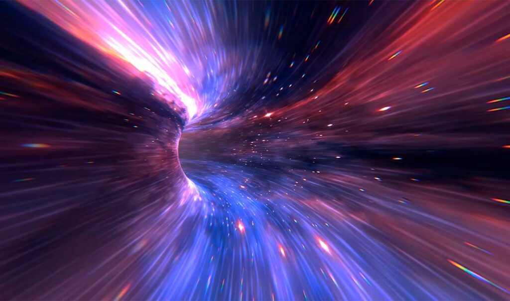
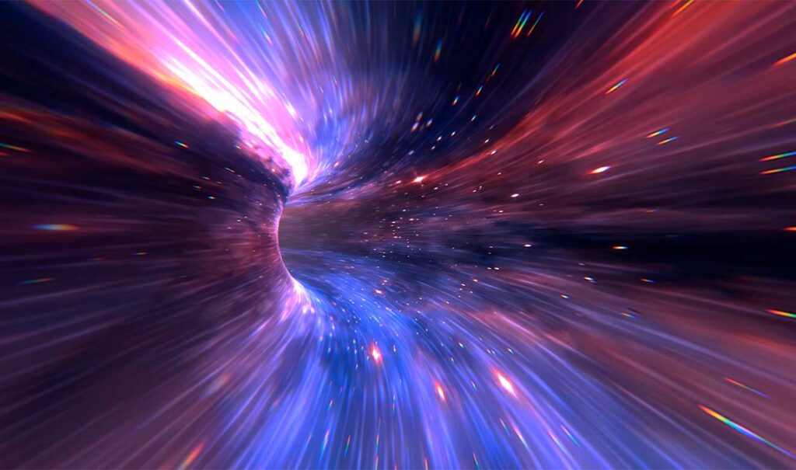

VIAJES EN EL TIEMPO
VIAJE EN EL TIEMPO ¿REALIDAD?
Uno de los mayores anhelos de la humanidad es viajar en el tiempo. La idea de poder corregir algo que salió mal en el pasado es muy seductora, por lo que escritores y directores de cine han creado diversas historias sobre este tema. Pero no todo se queda en la ciencia ficción, el concepto original surgió del mundo científico. De hecho, recientemente se llevó a cabo un experimento para crear en forma de holograma un agujero de gusano.
TEORIAS Y EXPERIMENTOS
Nuestra comprensión actual del tiempo y la causalidad se basa en la teoría general de la relatividad del físico teórico alemán Albert Einstein (1879-1955). Esta teoría –que existe desde hace más de 100 años y que los físicos coinciden en que describe con bastante precisión las estructuras causales de nuestro universo– combina el espacio y el tiempo en una sola entidad, el "espacio-tiempo", y ofrece una explicación extraordinariamente intrincada, según Shoshany, de cómo funcionan ambos, a un nivel que no tiene parangón con ninguna otra teoría establecida.
Albert Einstein y Nathan Rosen plantearon teóricamente la existencia del agujero de gusano, un puente para viajar a través del tiempo y el espacio. Durante años, los físicos han analizado este fenómeno y llegaron a la conclusión de que son iguales a un embudo, con tanta fuerza de gravedad que jalan toda la materia que se les acerca, incluso la luz. La investigadora añadió que, si se forma un agujero negro, inmediatamente se formará otro y estarán entrelazados por un agujero de gusano.
Sin embargo, los agujeros de gusano son muy frágiles y se rompen fácilmente. Por eso, sería muy difícil realizar un viaje, ya que al romperse, podríamos caer en algún lugar desconocido del universo, agregó la académica universitaria. Albert Einstein también trabajó en un asunto que no le agradaba mucho: las partículas enlazadas. Julieta Fierro explicó: “Vamos a suponer que tenemos dos partículas enlazadas. Pueden ser dos fotones, dos electrones o lo que sea, pero tienen una propiedad extraordinaria: si modifico a una, la otra lo hará de la misma forma instantáneamente”.
 

PROBLEMAS O PARADOJAS DEL VIAJE EN EL TIEMPO... ¿EFECTO MARIPOSA?
El otro problema principal es la observación de que el viaje en el tiempo parece contradecir la lógica en forma de paradojas de consistencia. Para explicarlo, el físico da un ejemplo sorprendente. "Por ejemplo, consideremos un escenario en el que entro en mi máquina del tiempo, la utilizo para retroceder en el tiempo cinco minutos, y destruyo la máquina en cuanto llego al pasado. Ahora que he destruido la máquina del tiempo, me sería imposible utilizarla cinco minutos después, explica Shoshany. Esto significa que, si está en el momento en que está, no puede retroceder en el tiempo y destruirla, lo que implica que la máquina del tiempo no ha sido destruida. Y puede usarlo para retroceder en el tiempo y destruirlo. En otras palabras, se trata de una máquina del tiempo que se destruye si y solo si... no se destruye. Paradójico, ¿no? "Como no puede ser destruida y no destruida simultáneamente, esta hipótesis es inconsistente y paradójica", afirma el físico, quien agrega que, a diferencia de la ciencia ficción, donde existe la idea errónea de que las paradojas se pueden "crear", una paradoja en la física no es un suceso que pueda ocurrir realmente. Así, las paradojas, agrega, son un concepto puramente teórico que apunta a una incoherencia en la propia teoría.
El "efecto mariposa" es un concepto que se origina en la teoría del caos, que es una rama de la matemática y la física que estudia sistemas complejos y dinámicos en los que pequeñas variaciones en las condiciones iniciales pueden tener un impacto significativo en el resultado a largo plazo. La idea del efecto mariposa es que, en un sistema caótico, una pequeña perturbación inicial, como el aleteo de una mariposa en Brasil, podría, teóricamente, desencadenar una cadena de eventos que lleva a un resultado mucho mayor, como un huracán en el otro lado del mundo. La relación entre el efecto mariposa y el viaje en el tiempo es principalmente una especulación de la ciencia ficción, ya que el viaje en el tiempo es una idea que aún no ha sido probada ni demostrada en la física moderna. Sin embargo, algunos autores de ciencia ficción han explorado la noción de que pequeñas alteraciones en el pasado podrían tener efectos masivos en el futuro, lo que se asemeja al concepto del efecto mariposa. En teoría, si el viaje en el tiempo fuera posible y se pudieran realizar cambios en el pasado, incluso las acciones más pequeñas podrían tener un impacto significativo en el curso de la historia. Por ejemplo, cambiar una palabra en un documento histórico, influir en la elección de un líder político o evitar un accidente podrían alterar drásticamente el desarrollo futuro de la humanidad. Sin embargo, es importante destacar que el viaje en el tiempo es puramente hipotético en la física actual y no se ha demostrado que sea posible. Además, hay muchos problemas teóricos y paradojas, como la paradoja del abuelo, que plantean preguntas sin respuesta sobre la coherencia y la posibilidad del viaje en el tiempo. Por lo tanto, la relación entre el efecto mariposa y el viaje en el tiempo es más un tema de especulación en la ciencia ficción que una realidad científica comprobada.
Los conceptos de "mundos infinitos" o "realidades alternas" están relacionados con el viaje en el tiempo a través de la teoría de multiversos o universos paralelos. Esta teoría postula que, en lugar de existir una única línea de tiempo o realidad, podría haber múltiples universos o realidades paralelas que coexisten, cada una con sus propias versiones de la historia y eventos. La idea es que cada vez que se toma una decisión o se produce un evento que podría tener múltiples resultados, el universo se ramifica en múltiples direcciones, creando así una multitud de realidades alternas. La relación entre el viaje en el tiempo y los multiversos se manifiesta en varias formas. Por ejemplo, cuando alguien viaja en el tiempo y realiza cambios en el pasado, en lugar de alterar la misma línea de tiempo en la que existe, podría crear una nueva realidad o universo en el que los cambios son efectivos. Esto se conoce como la "teoría del multiverso divergente". En otras palabras, el viajero en el tiempo no altera su propia historia, sino que crea una nueva realidad en la que los eventos se desarrollan de manera diferente. Además, el viaje en el tiempo podría utilizarse para explorar diferentes "ramas" de la realidad. Cada vez que se toma una decisión, se crea una nueva realidad en la que se toma la otra opción. Al viajar en el tiempo, uno podría explorar estas realidades alternas y ver cómo habrían evolucionado si se hubieran seguido diferentes caminos. La paradoja del abuelo, que se refiere a la posibilidad de viajar en el tiempo y evitar que un ancestro exista, podría resolverse mediante la teoría de los multiversos. En lugar de eliminar al abuelo de la existencia, se crearía una nueva realidad en la que el viajero en el tiempo no existe en ese mundo, pero su línea de tiempo original sigue intacta.